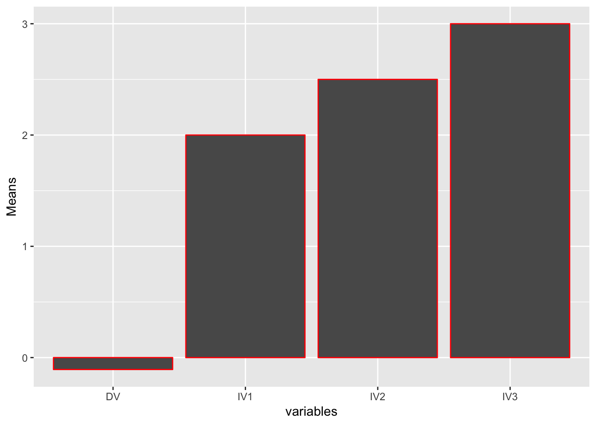

Chapter 10 “psych” Package
Author: Zoren Degtyarev
10.1 Procedures for Psychological, Psychometric, and Personality Research
10.2 Introduction
A sim.anova is a simulation function that falls under an all incompasing package called “psych.” The sim.anova function enables one to simulate a three way ANOVA and generate a matrix design which will include three independent variables (independent variable 1,2 and 3). The simulated independent variables can have different number of levels as well as effect sizes for every main effect as well as interaction. The sim.anova function can also simulate one or multiple dependent variables. Since psychological research requires lots of time as well as resources, the sim.anova function is a very useful tool that enables a researcher to simulate and inspect data prior to conducting an actual experiment. In this tutorial I will demonstrate how to generate an analysis of variance with three independent variables, I will also demonstrate how to produce an output of an ANOVA table, and lastly how to use a ggplot2 package to plot the means.
10.3 Install (“psych”)
The first step to simulating data is to make sure that you have installed a “psych” package. This can be done in the packages window.
10.3.1 Creating simulated data for three way ANOVA
The fist step in creating a simulated data for 3-way ANOVA is to create a data frame function (data.df), this is where your sim.anova function will be placed (data.df <- sim.anova). Since the sim.anova function can contain different arguments such as the effect size as well as different levels of independent variables, the first step is to identify these different arguments. The effect sizes are identified as “es1” “es2” and es3 for the effect size of the first, second and third independent variable. The argument n stands for the sample size in each cell. The argument n1, n2 and n3 stand for numbers of levels in the independent variables one, two and three. By default the sim.anova function sets the effect sizes to zero, and levels in each independent variables to 2. All simulations will be a between subject designs. If you are interested in the
library(psych)
data.df <- sim.anova()
describe(data.df)## vars n mean sd median trimmed mad min max range skew kurtosis
## IV1* 1 16 1.5 0.52 1.50 1.50 0.74 1.00 2.00 1.00 0.0 -2.12
## IV2* 2 16 1.5 0.52 1.50 1.50 0.74 1.00 2.00 1.00 0.0 -2.12
## IV3* 3 16 1.5 0.52 1.50 1.50 0.74 1.00 2.00 1.00 0.0 -2.12
## DV 4 16 0.0 1.07 0.13 -0.03 1.05 -1.64 2.07 3.71 0.1 -1.15
## se
## IV1* 0.13
## IV2* 0.13
## IV3* 0.13
## DV 0.27In the above example we generated a 3 way ANOVA, where by default all of the effect sizes are zero for all independent variables and by default there are 2 levels in each independent variable. Also by default the sample size per cell is 2, since there are a total of 8 cells the n=16 as seen above.
data.df <- sim.anova(es1=1, es2 = 0, es3 = 3)
describe(data.df)## vars n mean sd median trimmed mad min max range skew kurtosis
## IV1* 1 16 1.50 0.52 1.50 1.50 0.74 1.00 2.00 1.00 0.00 -2.12
## IV2* 2 16 1.50 0.52 1.50 1.50 0.74 1.00 2.00 1.00 0.00 -2.12
## IV3* 3 16 1.50 0.52 1.50 1.50 0.74 1.00 2.00 1.00 0.00 -2.12
## DV 4 16 0.04 3.21 -0.32 0.04 3.50 -5.32 5.45 10.77 0.12 -1.32
## se
## IV1* 0.13
## IV2* 0.13
## IV3* 0.13
## DV 0.80In the above example we manipulated the effect sizes for independent variabl 1,2 and 3
data.df <- sim.anova(es1=1, es2 = 0, es3 = 3, es12 = 2, es13 = 2)
describe(data.df)## vars n mean sd median trimmed mad min max range skew kurtosis
## IV1* 1 16 1.50 0.52 1.50 1.50 0.74 1.00 2.00 1.00 0.00 -2.12
## IV2* 2 16 1.50 0.52 1.50 1.50 0.74 1.00 2.00 1.00 0.00 -2.12
## IV3* 3 16 1.50 0.52 1.50 1.50 0.74 1.00 2.00 1.00 0.00 -2.12
## DV 4 16 -0.38 4.41 -0.41 -0.54 4.24 -6.99 8.43 15.42 0.39 -0.89
## se
## IV1* 0.13
## IV2* 0.13
## IV3* 0.13
## DV 1.10In the above example we also manipulated the effect sizes of the interaction between independent variable 1 and 2 (es12), as well as the effect size for interaction between IV1 and IV2
data.df <- sim.anova(es1=1, es2 = 0, es3 = 3, es12 = 2, es13 = 2, n=3)
describe(data.df)## vars n mean sd median trimmed mad min max range skew kurtosis
## IV1* 1 24 1.50 0.51 1.50 1.50 0.74 1.00 2.00 1.00 0.0 -2.08
## IV2* 2 24 1.50 0.51 1.50 1.50 0.74 1.00 2.00 1.00 0.0 -2.08
## IV3* 3 24 1.50 0.51 1.50 1.50 0.74 1.00 2.00 1.00 0.0 -2.08
## DV 4 24 -0.13 4.13 -0.11 -0.27 4.70 -6.58 7.64 14.22 0.3 -0.96
## se
## IV1* 0.10
## IV2* 0.10
## IV3* 0.10
## DV 0.84The above example was manipulated to have a cell sample size equal to 3 (n=3)
data.df <- sim.anova(es1=1, es2 = 0, es3 = 3, es12 = .5, es13 = 2, n1=3, n2=4, n3=5)
describe(data.df)## vars n mean sd median trimmed mad min max range skew
## IV1* 1 120 2.00 0.82 2.00 2.00 1.48 1.00 3.00 2.00 0.00
## IV2* 2 120 2.50 1.12 2.50 2.50 1.48 1.00 4.00 3.00 0.00
## IV3* 3 120 3.00 1.42 3.00 3.00 1.48 1.00 5.00 4.00 0.00
## DV 4 120 0.13 3.99 -0.31 -0.06 3.33 -8.01 10.46 18.47 0.46
## kurtosis se
## IV1* -1.52 0.07
## IV2* -1.39 0.10
## IV3* -1.33 0.13
## DV -0.06 0.36By manipulating the levels in each independent variable in the above example to n1=3, n2=4, n3=5; we can see that the sample size in each independent variable increased to 120.
10.4 Producing an ANOVA table
It is very useful to see the results of the 3 way ANOVA simulation in the table. To do so in the code below we will create an ANOVA tabble by using the “aov” or the “lm” function. Let’s take a look at an example below
summary(aov(DV~IV1*IV2*IV3,data=data.df)) ## Df Sum Sq Mean Sq F value Pr(>F)
## IV1 2 108.6 54.31 62.895 1.88e-15 ***
## IV2 3 0.8 0.27 0.317 0.812892
## IV3 4 1201.0 300.24 347.710 < 2e-16 ***
## IV1:IV2 6 26.3 4.38 5.077 0.000286 ***
## IV1:IV3 8 469.1 58.64 67.910 < 2e-16 ***
## IV2:IV3 12 12.8 1.07 1.237 0.280408
## IV1:IV2:IV3 24 21.1 0.88 1.017 0.461067
## Residuals 60 51.8 0.86
## ---
## Signif. codes: 0 '***' 0.001 '**' 0.01 '*' 0.05 '.' 0.1 ' ' 1In the above example we first incorporated a “summary” function, which is used to generate summaries of various statistical models, the “aov” function enables one to generate a succinc description of the ANOVA table which includes degrees of freedom, sum of squares, mean squares, F values, and the probabilities of the F values. The table summary is very usefull as one can inspect which independent variables as well as interactions are statistically significant.
summary(lm(DV~IV1*IV2*IV3,data=data.df)) #compare with the aov model##
## Call:
## lm(formula = DV ~ IV1 * IV2 * IV3, data = data.df)
##
## Residuals:
## Min 1Q Median 3Q Max
## -1.6560 -0.3548 0.0000 0.3548 1.6560
##
## Coefficients:
## Estimate Std. Error t value Pr(>|t|)
## (Intercept) -1.66427 0.65707 -2.533 0.013946 *
## IV10 -3.49814 0.92923 -3.765 0.000382 ***
## IV11 -5.90623 0.92923 -6.356 3.10e-08 ***
## IV2-1 -0.80378 0.92923 -0.865 0.390488
## IV21 0.20407 0.92923 0.220 0.826916
## IV23 -1.21676 0.92923 -1.309 0.195382
## IV3-1 0.26894 0.92923 0.289 0.773253
## IV30 1.44410 0.92923 1.554 0.125427
## IV31 1.96471 0.92923 2.114 0.038651 *
## IV32 1.38202 0.92923 1.487 0.142179
## IV10:IV2-1 0.86154 1.31413 0.656 0.514593
## IV11:IV2-1 1.36088 1.31413 1.036 0.304558
## IV10:IV21 1.60769 1.31413 1.223 0.225968
## IV11:IV21 0.03478 1.31413 0.026 0.978971
## IV10:IV23 1.63626 1.31413 1.245 0.217927
## IV11:IV23 3.84153 1.31413 2.923 0.004880 **
## IV10:IV3-1 3.48285 1.31413 2.650 0.010268 *
## IV11:IV3-1 4.12221 1.31413 3.137 0.002646 **
## IV10:IV30 3.58240 1.31413 2.726 0.008389 **
## IV11:IV30 7.80727 1.31413 5.941 1.54e-07 ***
## IV10:IV31 6.12665 1.31413 4.662 1.79e-05 ***
## IV11:IV31 10.25065 1.31413 7.800 1.07e-10 ***
## IV10:IV32 8.54586 1.31413 6.503 1.75e-08 ***
## IV11:IV32 14.29862 1.31413 10.881 7.95e-16 ***
## IV2-1:IV3-1 1.30243 1.31413 0.991 0.325620
## IV21:IV3-1 -0.80996 1.31413 -0.616 0.539997
## IV23:IV3-1 -0.46193 1.31413 -0.352 0.726438
## IV2-1:IV30 1.45008 1.31413 1.103 0.274237
## IV21:IV30 -1.72755 1.31413 -1.315 0.193650
## IV23:IV30 1.12272 1.31413 0.854 0.396316
## IV2-1:IV31 -0.43237 1.31413 -0.329 0.743290
## IV21:IV31 -0.52972 1.31413 -0.403 0.688314
## IV23:IV31 -0.40268 1.31413 -0.306 0.760345
## IV2-1:IV32 1.83402 1.31413 1.396 0.167975
## IV21:IV32 -0.45365 1.31413 -0.345 0.731145
## IV23:IV32 0.15269 1.31413 0.116 0.907891
## IV10:IV2-1:IV3-1 -2.25221 1.85847 -1.212 0.230315
## IV11:IV2-1:IV3-1 -1.30386 1.85847 -0.702 0.485655
## IV10:IV21:IV3-1 -0.94391 1.85847 -0.508 0.613387
## IV11:IV21:IV3-1 1.63604 1.85847 0.880 0.382199
## IV10:IV23:IV3-1 -1.62986 1.85847 -0.877 0.383990
## IV11:IV23:IV3-1 -1.96050 1.85847 -1.055 0.295701
## IV10:IV2-1:IV30 -1.20641 1.85847 -0.649 0.518725
## IV11:IV2-1:IV30 -1.52705 1.85847 -0.822 0.414518
## IV10:IV21:IV30 0.78631 1.85847 0.423 0.673739
## IV11:IV21:IV30 1.34731 1.85847 0.725 0.471297
## IV10:IV23:IV30 -0.83140 1.85847 -0.447 0.656228
## IV11:IV23:IV30 -3.86763 1.85847 -2.081 0.041702 *
## IV10:IV2-1:IV31 -1.23386 1.85847 -0.664 0.509290
## IV11:IV2-1:IV31 0.59493 1.85847 0.320 0.749992
## IV10:IV21:IV31 -1.36971 1.85847 -0.737 0.463989
## IV11:IV21:IV31 0.09510 1.85847 0.051 0.959360
## IV10:IV23:IV31 -0.65619 1.85847 -0.353 0.725264
## IV11:IV23:IV31 -0.16497 1.85847 -0.089 0.929561
## IV10:IV2-1:IV32 -2.43409 1.85847 -1.310 0.195280
## IV11:IV2-1:IV32 -3.01053 1.85847 -1.620 0.110499
## IV10:IV21:IV32 -0.98478 1.85847 -0.530 0.598145
## IV11:IV21:IV32 1.23285 1.85847 0.663 0.509634
## IV10:IV23:IV32 -0.49529 1.85847 -0.267 0.790763
## IV11:IV23:IV32 -0.45313 1.85847 -0.244 0.808202
## ---
## Signif. codes: 0 '***' 0.001 '**' 0.01 '*' 0.05 '.' 0.1 ' ' 1
##
## Residual standard error: 0.9292 on 60 degrees of freedom
## Multiple R-squared: 0.9726, Adjusted R-squared: 0.9457
## F-statistic: 36.11 on 59 and 60 DF, p-value: < 2.2e-16The “aov” function is not the only function to generate an ANOVA table. The “aov” function is a subset of an “lm” function. As seen in the above example the “lm” function gives more comprehensive breakdown of the the 3 way anova simulation.
10.5 Graphing the means of using ggplot2 function
ggplot2 function is a very usefull function as it enabbles one to visualize your data. The examples below will illustrate how to graph the means of the independent variables.
The first step in graphing the means is to first isolate the column under the title “mean”. To do we have to use the “describe” function, which summarizes basic statistics. By using square brackets [,] we can isolate the exact column in our data frame. In the example below we are interested in means which fall under the 3rd column. by using [,3] we are able to isolate the 3rd column
describe(data.df)[,3]##
##
## NA Variables 13 Observations
## ---------------------------------------------------------------------------## Error: $ operator is invalid for atomic vectorsThe example above illustrates the generated means. The next step is to insert the means into a new variable, in the example below that variable is “means_variable”
means_variable <- describe(data.df)[,3]The example above created our new variable with the independent variable means as well as dependent variable mean, and is stored in the ’Global Environment
In the next step we are ready to graph the means using the ggplot2 function. The first step is to install the ggplot2 package. This can be accomplished by either installing the ggplot2 in the “Packages” tab on your right or by using install.packages(“ggplot2”) function. Installing the ggplot2 can also be done by using the function install.packages(“tidyverse”), both functions will install the package for you.
As seen in the example below your line of code should always start with library(ggplot2)
The next step is to encode your vactor as a factor,in the example below, it is c(“IV1”,“IV2”,“IV3”,“DV”), followed by putting this factor into a new function, in the example below called “variables”.
Next, a new variable “Means” has to be created. This function will hold the means that were isolated earlier in the data frame and put in the function “means_variable”
Finally the variable plot_df is created in order to hold your data frame with IV’s and DV: “data.frame”
Now we are ready to plot the basic bar graph by using ggplot function, used to declare your input data frame which includes a set of plot common aesthetics to be graphed. The hight of the bars, position and color of your bars and outline of the bars can be modified to your specifiations.
library(ggplot2)
variables <- rep(as.factor(c("IV1","IV2","IV3","DV")))
Means <- means_variable
plot_df <- data.frame(variables,
Means)## Error in as.data.frame.default(x[[i]], optional = TRUE, stringsAsFactors = stringsAsFactors): cannot coerce class '"describe"' to a data.frame# basic bar graph
ggplot(plot_df, aes(x=variables,y=Means,
))+
geom_bar(stat="identity",
position="dodge",
color="red")## Error in ggplot(plot_df, aes(x = variables, y = Means, )): object 'plot_df' not foundTHe above example shows a basic bar graph of the IV’s and DV of the simulated ANOVA
10.5.1 Another way to graph the means is to pull the actual numerical means from the “means_variable”
In the example below the numerical mean values are manually inserted into the “Means” variable
library(ggplot2)
variables <- rep(as.factor(c("IV1","IV2","IV3","DV")))
Means <- c(2, 2.5, 3, -0.107)
plot_df <- data.frame(variables,
Means)
# basic bar graph
ggplot(plot_df, aes(x=variables,y=Means, # aestetics definition has gotten
# color=factor_two))+ # color here means the border collor
))+
geom_bar(stat="identity",
position="dodge",
color="red")
10.6 Summary
sim.anova is part of an all encompasing package called “psych”. It is a very useful function in psychological research, used for simulating a 3 way ANOVA with an arbitrary amounts of sample sizes, effect sizes as well as levels in each independent variable. In addition this function, the simulated data can be used to create an ANOVA table using an “aov” or “lm” function. Furthermore, by using the ggplot2 function the statistical data such as the means of the variables can be depicted graphically.
10.7 Citations
Revelle, W. (n.d.). Psych. Retrieved June 24, 2019, from https://www.rdocumentation.org/packages/psych/versions/1.8.12/topics/sim.anova
Wickham H (2016). ggplot2: Elegant Graphics for Data Analysis. Springer-Verlag New York. ISBN 978-3-319-24277-4, http://ggplot2.org.